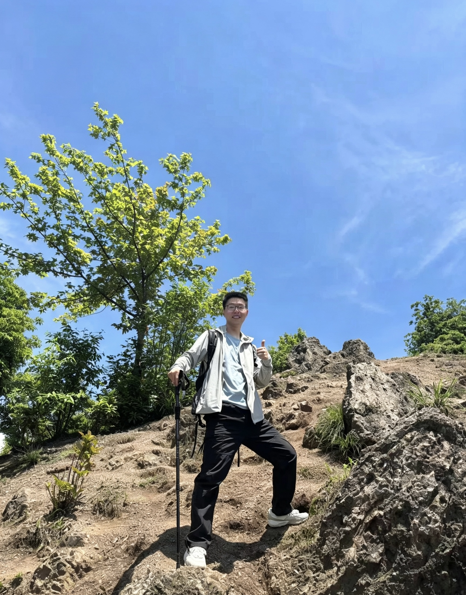

Zhiwei Zhou

周志伟
我是一名物理算法工程师，现就职于武汉某医疗科技有限公司，主要负责内窥镜图像去噪与增强、导航相机标定等算法的研究与实现、超分辨定位成像中的图像处理方法与加速。
博士期间依托国家重大科研仪器研制项目，围绕超分辨定位成像开展算法研究，完成了从算法设计、GPU 并行加速到软件工程落地的完整闭环：包括基于深度学习的实时图像重建、基于残差生成器网络的图像修复，以及高通量单分子二维高斯拟合的 CUDA 并行实现，处理通量达到 700 万 emitters/s。
工程实践中以 C++/Python 为主要技术栈，擅长将深度学习模型通过 TensorRT、Onnxruntime 等推理引擎部署到实际设备，在保证算法精度的同时满足实时性要求；对 CUDA 并行计算、多线程编程、Qt 跨平台桌面应用开发也有较丰富的实践经验。
教育与工作经历
- 2023.07 - 至今：武汉某医疗科技有限公司，物理算法工程师
- 2019.09 - 2023.06：华中科技大学，武汉光电国家研究中心，光学工程，博士
- 2017.09 - 2019.09：华中科技大学，武汉光电国家研究中心，光学工程，硕士（硕博连读）
- 2013.09 - 2017.06：湖北大学，楚才学院，电子信息工程，学士（保送读研）
项目经历
基于深度学习的实时图像重建方法
- 时间：2022.03 - 至今
- 方向：视觉算法 - 模型推理
- 来源：国家重大科研仪器研制项目——RNA 原位成像系统（1000 万）
- 问题：现有方法图像重建速度慢
- 方法：1）网络前几层去除上采样，减小显存消耗；2）使用 TensorRT 加速
- 结果：保证 1~9 mol/μm² 高密度处理能力，实现 50 μm × 50 μm 视场大小的实时处理，论文撰写中
- 技能：Python、C++、多线程、推理引擎（Onnxruntime、TensorRT）
基于残差生成器网络的图像修复方法
- 时间：2019.06 - 2021.12
- 方向：视觉算法 - 模型设计
- 来源：国家重点基础研究计划（973 计划）——新型纳米超分辨结构宽场成像（97 万）
- 问题：现有 Pix2pix 方法图像重建时产生了图像伪影（错误连接、结构缺失）
- 方法：使用 ResNet 生成器替代 Pix2pix 方法中基于 U-Net 的生成器
- 结果：解决了 Pix2pix 图像修复的伪影问题，见研究成果 1
- 技能：Python、PyTorch、基于深度学习的图像超分辨方法（CNN、GAN）
基于 CUDA 的并行计算加速单分子定位成像
- 时间：2017.06 - 2019.06
- 方向：视觉算法 - 图像处理加速
- 来源：国家重点科研仪器研制专项——基于荧光分子纳米分辨定位的超分辨定位成像仪器（700 万）
- 问题：单分子定位成像数据处理慢
- 方法：利用 GPU 的并行计算能力，高通量处理单分子二维高斯拟合任务，并基于 Java 完成软件界面开发
- 结果：能够实时处理采集的图像，通量达到 700 万 emitters/s，见研究成果 3
- 技能：C++、CUDA、Java Swing、JNI 通信、BFGS 优化算法
研究成果
- Zhiwei Zhou, Weibing Kuang, Zhengxia Wang*, Zhenli Huang*. ResNet-based image inpainting method for enhancing the imaging speed of single molecule localization microscopy. Optics Express, 2022.
- Mingtao Shang, Zhiwei Zhou, Weibing Kuang, Yujie Wang*, Bo Xin, and Zhenli Huang. High-precision 3D drift correction with differential phase contrast images. Optics Express, 2021.
- Luchang Li, Bo Xin, Weibing Kuang, Zhiwei Zhou, and Zhenli Huang*. Divide and Conquer: Real-time maximum likelihood fitting of multiple emitters for superresolution localization microscopy. Optics Express, 2019.
专业技能
- 编程语言：C/C++（熟悉）、Python（熟悉）、MATLAB（熟悉）、Java（了解）
- 证书：全国计算机等级考试嵌入式三级、H3C 初级网络工程师、CET-6
- 其他：图像处理仿真与硬件平台（FPGA）实现、导航相机标定仿真与硬件平台（Linux-Zynq）实现、OpenCV、CUDA 并行计算与加速